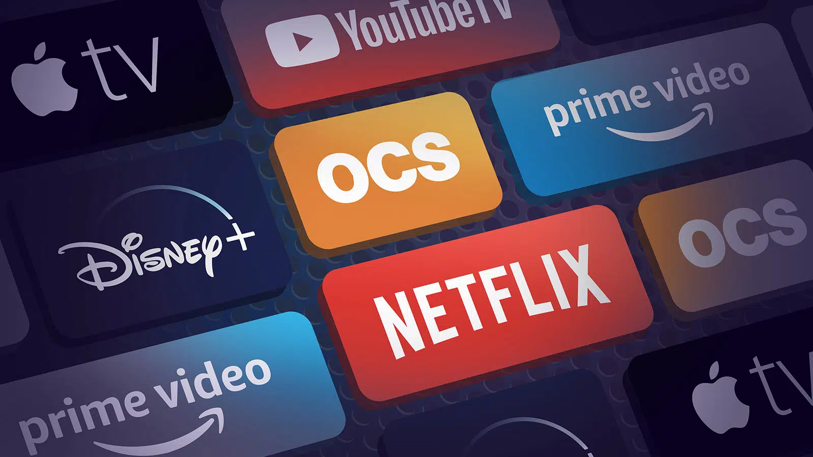

<section id="page">
  <div class="container">
    <figure>
      
    </figure>
    <h1>Fullstack Dev Streaming Solution</h1>
    <p>
      The creation of complex OTT websites and apps, which allow strong
      user interaction, broad range of supported devices,
      <em>wide TVod</em> and <em>AVod libraries</em>, smart
      recommendations and content pushing, smoothless streaming
      optimizing network usage, content encryption and content abuse
      cuntermeasures requires very broad skill set that can be
      identified in the figure of the full-stack streaming developer.<br />It
      is necessary to discern this figure from the
      <em>front-end developers</em> and
      <em>back-end developers</em> with whom it shares part of the
      competences, but of which it is the guide and reference point.
    </p>
    <h2>TV Front-end developer</h2>
    <p>
      It deals with the part of the website visible to the user and with
      which the user interacts. In case of web client and most part of
      current SmartTv and and STB, using a mixture HTML, CSS and
      Javascript code, as well as any of the best-in-class web framework
      (such as React, AngularJs, Vue.js, Meteor), he creates the structure
      and content of the webapp built around the player, gives it style,
      player controls, content navigation and makes it possible for the
      user to interact with it. Normally he also has user experience
      skills. In case of native clients such as iOS and Android devices.
      he knows how to integrate the most used native player framework
      using Swift/ObjectiveC for iOS and Java/Kotlin for Android, with a
      deep knowledge of of DRM modules and streaming protocols, which in
      case of a native player have to be directly managed by the app
      running the player.
    </p>
    <h2>TV Back-end developer</h2>
    <p>
      He works on the non-visible part of the OTT architecture, taking
      care of the server-side operation with interventions that do not
      impact on what users see when they visit the site. In terms of
      specific knowledge, the TV back-end developer usually uses languages
      such as Java and Python. He has Experience in realizing end-to-end
      solution architecture for large &amp; complex systems<br />and in
      designing and running applications on AWS/ Azure or Other Cloud
      Providers. He has a deep understanding of video protocols, as well
      as general understanding of wider technologies adopted by OTT
      solutions e.g. IP/TCP, ABR, Encoding, DVB, DRM&amp;CAS. He must be
      proficient in database design and development as well as handling
      infrastructure tools and technologies like Docker, Kubernetes,
      AWS/Azure, Elastic Search, Redis, and many others. Ensuring platform
      security and reliability are his other main duties.
    </p>
    <h2>TV Fullstack developer</h2>
    <p>
      This is a
      <strong
        >developer with both <em>front-end</em> and <em>back-end</em>
        <em>skills</em></strong
      >, where backend and frontend are declined in the digital TV
      environment, who knows streaming protocols, codecs and encodings, CA
      and DRM, native player as well as web player, native mobile
      development for iOS and Android, as well as HTML5 app development,
      JavaScript, Java, Python and the other scripting languages used to
      design and run software.<br />In particular:
    </p>
    <ul>
      <li>
        <strong>Client side</strong> – creates everything of the
        application that is visible to the end user (the player as well as
        the GUI layout, positioning of text and images, colours, fonts,
        buttons, etc.) using usually HTML, CSS and JavaScript in case
        HTML5 TV client;
      </li>
      <li>
        <strong>Server side</strong> – creates algorithms to manipulate
        and organise the streaming content to be shown to the client in a
        fast, efficient, secure and reliable way. He’s also responsible
        for the implementation of any action that must be performed in
        response to a client request.
      </li>
    </ul>
    <h3>Skills</h3>
    <p>
      The set of skills that a <em>full stack developer</em> must have
      coincides with those described above, but to complete the set of
      fundamental knowledge needed we must also add that related to
      databases, relational or not, aimed at storing data.
    </p>
    <h2>OTT Solution Architect</h2>
    <p>
      The <em>OTT Solution Architect</em> is the responsible for the
      architecture of OTT Clients (Mobile, Connected TV’s, Roku etc), its
      Content Management Systems (CMS) and their use of the OTT platform
      and interfaces to various subsystems. He is proficient in defining
      solutions architectures that deliver all platform aspects of an OTT
      IPTV product offering. He has demonstrable experience of defining
      and delivering architectural solutions that support very high
      numbers of peak concurrent users, that are highly available, and
      highly resilient in the face of dependent component failures. He has
      deep understanding and delivery experience of building web-oriented
      distributed systems architectures that can work both on the portion
      of the app or software with which the user will interact, and on the
      whole hidden infrastructure that allows to manage the functioning
      mechanisms.
    </p>
    <h2>Skillbill Specializations on TV/Streaming Applications</h2>
    <p>
      As Skillbill, we have focused our forces on a particular area
      related to video broadcasting in all its forms, making use of the
      skills described above. Our competences cover all the streaming
      technologies in an end-to-end fashion, in fact we are actively
      involved from purely backend tasks like Vod ingestion, transcoding,
      encryption to device frontend development and device player
      customization.<br /><strong
        >We currently follow and we have followed many customers in the
        streaming and television area</strong
      >
      like : <a href="https://www.sky.it/" target="_blank">Sky</a>,
      <a href="https://www.libertyglobal.com/" target="_blank"
        >Liberty Global</a
      >, <a href="https://it.chili.com/" target="_blank">ChiliTV</a>,
      <a href="https://noriginmedia.com/" target="_blank"
        >Norigin Media</a
      >
      and
      <a href="https://www.yottamedialabs.com/" target="_blank"
        >Yotta Media Lab</a
      >.<br />With our
      <strong>strong and long experience in software development</strong>,
      we take care of many aspects of the entire streaming service
      chain:<br />Infrastructure as code, integration of ad-hoc services,
      back-end, web front-end, Smart-TV and on Set-top-box. We have senior
      knowledge in DRM, Transcoding and Players. Cutting-edge technologies
      such as Microservices, Hbbtv 2.0, Rdk, RiskTV, Wiplay and the most
      used Javascript frameworks.<br />Consultancy, whole project or part
      of it. In every case, our effectiveness is always at the highest
      levels.
    </p>
  </div>
</section>
